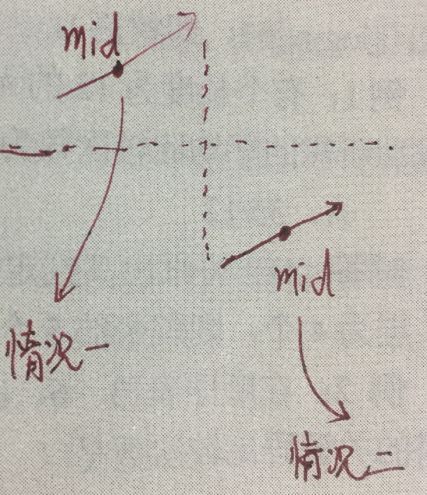

二分查找
1 二分查找
适合二分查找的存储结构必须具有随机存取的特性
int Binary_Search(Elemtype A[], int low, int high, Elemtype key) { int mid; while(low <= high) { mid = low + (high - low)/2; if(A[mid] == key) return mid; else if(A[mid] > key) high = mid - 1; else low = mid + 1; } return -1; }
2 扩展算法
有一个循环有序数组 A，如：{7, 8, 9, 0, 1, 2, 3, 4, 5, 6}，不知道最小值的位置。如何从这样的数组中寻找一个特定的元素呢？
分析：如下图，首先判断 mid 位于两个子递增序列中的左边递增序列，还是右边递增序列

该算法不支持含有重复元素的序列。例如：[2, 2, 2, 3, 2, 2, 2]。事实上，在这种情况下，只能依次遍历
int search(int A[], int low, int high, int key) { while(low <= high) { int mid = low + (high - low)/2; if(A[mid] == key) return mid; else { if(A[low] <= A[mid]) // 第一种情况，mid 位于左侧的递增序列中 { if(key > A[mid]) // key 位于左侧的递增序列中，且在 mid 右侧 low = mid + 1; else { if(key >= A[low]) // key 位于左侧的递增序列中，且在 mid 左侧 high = mid - 1; else // key 位于右侧的递增序列中 low = mid + 1; } } else // 第二种情况，mid 位于右侧的递增序列中 { if(key < A[mid]) // key 位于右侧的递增序列中，且在 mid 左侧 high = mid - 1; else { if(key <= A[high]) // key 位于右侧的递增序列中，且在 mid 右侧 low = mid + 1; else // key 位于左侧的递增序列中 high = mid - 1; } } } } return -1; }